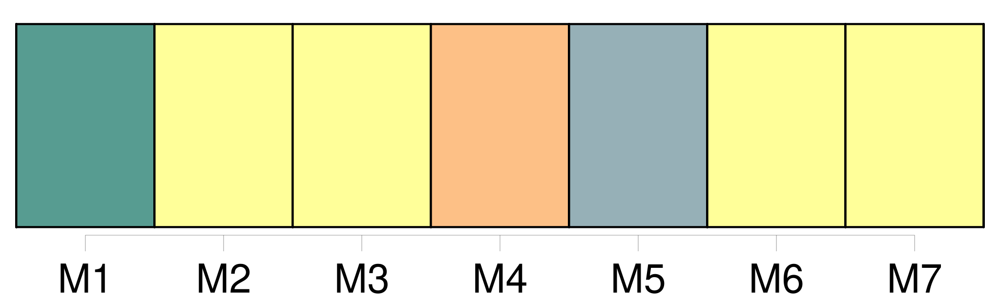
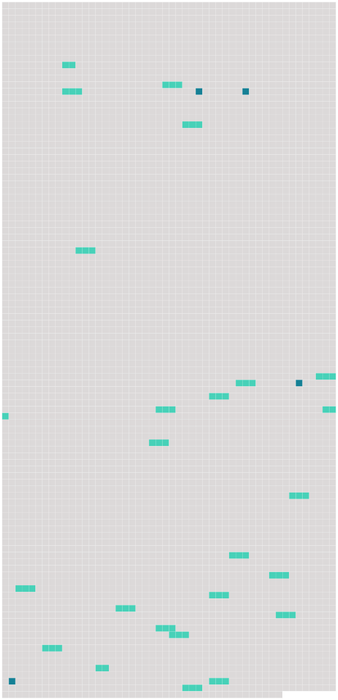

Longueur nb maillons : 28 mentions |
  |
Convention portant création d'un institut universitaire européen [9 phrases]
[Les Etats contractants] prennent toutes les mesures propres à faciliter l'accomplissement de la mission de l'Institut, dans le respect de la liberté de la recherche et de l'enseignement. [1 phrases] [Les Etats contractants] favorisent le rayonnement de l'Institut dans le monde universitaire et scientifique.
A cet effet, [ils] assistent l'Institut en vue d' [établir] une coopération appropriée avec les institutions universitaires et scientifiques situées sur leur territoire, ainsi qu'avec les organismes européens et internationaux compétents pour les questions d'éducation, de culture et de recherche. [9 phrases]
La présidence du conseil supérieur est assurée a tour de rôle par chacun [des Etats contractants] pour une durée d'un an. [40 phrases]
Le conseil supérieur peut inviter à participer aux activités du conseil académique, dans les conditions qu'il détermine, des personnalités ressortissantes [des Etats contractants] et appartenant aux différentes catégories de la vie économique, sociale et culturelle, désignées en raison de leurs compétences. [42 phrases] Les membres du corps enseignant sont choisis parmi les personnalités ressortissantes [des Etats contractants] dont les qualifications sont de nature à conférer une haute valeur aux travaux de l'Institut. [2 phrases]
[Les Etats contractants] prennent, dans les limites de [leurs] possibilités, toutes dispositions utiles en vue de faciliter la mobilité des personnes appelées à faire partie du corps enseignant de l'Institut. [3 phrases]
L'Institut est ouvert aux ressortissants [des Etats contractants] [4 phrases]
Les autorités compétentes [des Etats contractants] prêtent leur concours à l'Institut en vue de l'application de la procédure d'admission. [1 phrases]
Chacun [des Etats contractants] favorise, dans la limite des crédits disponibles, l'octroi de bourses à ceux de ses ressortissants admis à l'Institut dont la situation le rendrait nécessaire, en prenant, le cas échéant, toutes mesures utiles pour l'adaptation appropriée des dispositions régissant l'octroi des bourses. [16 phrases]
Les contributions financières [des Etats contractants] destinées à faire face aux dépenses prévues au budget de l'Institut sont déterminées selon la clef de répartition suivante : [14 phrases]
[Les Etats contractants] versent chaque mois, à titre provisionnel et conformement à la clef de répartition retenue pour l'exercice précédent, les sommes nécessaires en vue d'assurer l'application du présent article. [20 phrases]
Les dispositions réglementaires financières prévues au paragraphe 1 peuvent prévoir la création d'un comité budgétaire et financier composé de représentants [des Etats contractants] et chargé de préparer les délibérations du conseil supérieur en matière budgétaire et financière. [8 phrases]
Article 28 [1 phrases]
Article 29 [1 phrases]
[Les Etats contractants] s'engagent à exécuter les décisions de l'instance arbitrale. [5 phrases]
Les huit premiers enseignants de l'Institut sont choisis à l'unanimité par un comité académique provisoire composé de deux représentants de chacun [des Etats contractants] , dont au moins un universitaire. [3 phrases]
L'adhesion de tout Etat membre des Communautés européennes, autre que [les Etats contractants] , s'effectue par le dépôt d'un instrument d'adhésion auprès du gouvernement de la République italienne. [2 phrases]
Article 33
Si le conseil supérieur, statuant à l'unanimité, émet un avis favorable à la réunion d'une conférence des représentants des gouvernements [des Etats contractants] , celle -ci est convoquée par le gouvernement qui assume la présidence du conseil supérieur. [2 phrases]
La convention s'applique au territoire européen [des Etats contractants] , aux départements français d'outre-mer ainsi qu'aux territoires français d'outremer. [4 phrases]
Toutefois, le gouvernement du royaume de Danemark peut notifier, par une déclaration déposée au plus tard le 31 décembre 1975 auprès du gouvernement de la République italienne, qui en remet une copie certifiée conforme au gouvernement de chacun des autres [Etats contractants] , que la convention est applicable à ces îles. [1 phrases]
Tout Etat contractant peut déclarer, par notification au gouvernement de la République italienne, au moment de la signature, de la ratification, de l'acceptation ou de l'approbation de la convention, ou de l'adhésion à celle -ci, ou à tout moment ultérieur, que la convention s'appliquera à celui ou à ceux des territoires de dehors de l'Europe désignés par ladite déclaration, dont [il] assure les relations internationales.
Article 36 [1 phrases]
Article 37 |
 |
La ressource peut être téléchargée sur la page Ortolang
Si vous avez des questions ou vous voyez des erreurs, merci d'envoyer un mail à silvia.federzoni89@gmail.com
Site développé par S. Federzoni (contact)